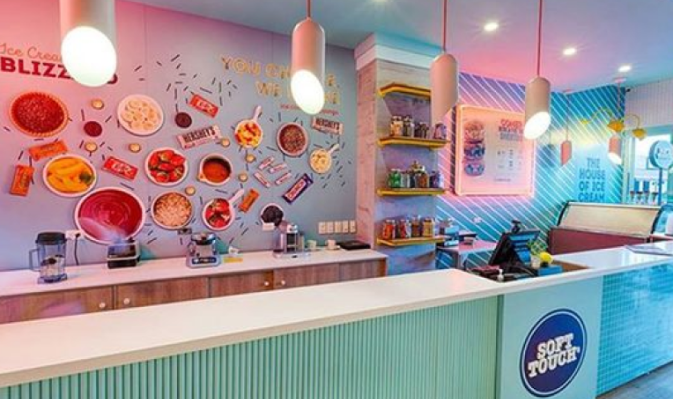

Quem somos
Candy Love é uma sorveteria e doceria localizada na cidade de Brumado-BA que conta com um ambiente agradável, colorido e aconchegante, com deliciosos sabores de sorvetes e doces e muitas opções para saborear.
Candy Love é uma sorveteria e doceria localizada na cidade de Brumado-BA que conta com um ambiente agradável, colorido e aconchegante, com deliciosos sabores de sorvetes e doces e muitas opções para saborear.
Cada combinação utilizada em nossos sorvetes são feitas exclusivamente pensando na experiência do cliente, cada sabor é combinado especificamente avaliando as notas de sabor, cítricas e doces, para que o cliente sinta sensações de refrescância e docura de um jeito incrível, além de que nossa sorveteria contém mais de 100 sabores para experimentar e mais de 1000 combinações diferentes para testar no Self Service.
